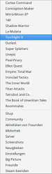

Steam
Dieser Artikel wurde für die folgenden Ubuntu-Versionen getestet:
Ubuntu 17.10 Artful Aardvark
Ubuntu 16.04 Xenial Xerus
Ubuntu 14.04 Trusty Tahr
Zum Verständnis dieses Artikels sind folgende Seiten hilfreich:
Steam  ist eine kommerzielle Vertriebsplattform für Computerspiele. Mit dem Client, welcher von der Valve Corporation entwickelt wurde, können Spieletitel (größtenteils käuflich) erworben, installiert und gestartet werden.
ist eine kommerzielle Vertriebsplattform für Computerspiele. Mit dem Client, welcher von der Valve Corporation entwickelt wurde, können Spieletitel (größtenteils käuflich) erworben, installiert und gestartet werden.
Um Steam nutzen zu können, ist ein Benutzerzugang erforderlich, welcher über die Internetseite angelegt werden kann.
Seit dem 14. Februar 2013 ist Steam nativ für Linux verfügbar. Angeboten werden für diesen Client eine wachsende Auswahl von Linux-Spielen aus dem Programm des Anbieters. Es gibt ebenfalls eine Kommandozeilen-Version des Clients. Mit SteamCMD können unter anderem dedizierte Server heruntergeladen, installiert und aktualisiert werden.
Software, die nur mit Hilfe von Wine auch unter Linux läuft, kann eventuell (wie im Artikel Steam Client unter Wine beschrieben) auf eigene Gefahr und ohne speziellem Support mit Wine und dem Windows-Client installiert werden.
 |
| Steam-Client |
Installation¶
Debian-Paket¶
Zur Installation von Steam 
 das .deb-Paket herunterladen und installieren [1]. Nach erfolgreicher Installation ist das Programm im Anwendungsmenü unter "Spiele -> Steam" zu finden. Nach dem ersten Start der Anwendung startet die eigentliche Installationsroutine und es werden weitere Daten aus dem Internet heruntergeladen. Bei Bedarf die Oberflächensprache umstellen.
das .deb-Paket herunterladen und installieren [1]. Nach erfolgreicher Installation ist das Programm im Anwendungsmenü unter "Spiele -> Steam" zu finden. Nach dem ersten Start der Anwendung startet die eigentliche Installationsroutine und es werden weitere Daten aus dem Internet heruntergeladen. Bei Bedarf die Oberflächensprache umstellen.
Nach dem Start nistet sich in der Systemleiste ein Icon ein. Über dieses erreicht man, mit einem  Linksklick, ein Menü mit dem sich regelmäßig verwendete Anwendungen und einige zusätzliche Funktionen schnell erreichen lassen.
Linksklick, ein Menü mit dem sich regelmäßig verwendete Anwendungen und einige zusätzliche Funktionen schnell erreichen lassen.
Paketquelle¶
Die Oberfläche kann über
steam (unter Xenial 16.04 und höher, multiverse, )
 mit apturl
mit apturl
Paketliste zum Kopieren:
sudo apt-get install steam
sudo aptitude install steam
installiert [6] und aus dem Menü heraus gestartet [7] werden.
Ubuntu Software-Center¶
Steam kann zudem über das Ubuntu Software-Center für 0$ gekauft werden.
Diese Art der Installation ist insbesondere für den Neueinsteiger bequem. Man sollte hierzu aber nicht unerwähnt lassen, dass bei dem Kauf über diesen Vertriebsweg kein Key mitgeliefert wird, der eine Crossplattform-Lizenz beinhaltet. Updates werden aber wenige Tage nach erscheinen zur Verfügung gestellt.
Bedienung¶
Die Bedienung des Clients ist intuitiv zu erfassen. Die einzelnen Menüs beinhalten folgenden Inhalt:
| Steam | |
| Menüpunkt | Beschreibung |
| "Steam" | Updates suchen, Einstellungen, Offline spielen und Steam beenden. |
| "Anzeige" | Ansichtsmodi ändern. |
| "Mein Profil" | Profilinformationen, aufgenommene Bildschirmfotos, Videos... |
| "Freunde" | Profilinformationen ändern, Chatmodus (online... away), |
| "Spiele" | Spiele aktivieren, Spielesammlung einsehen, sonstige Spiele zur Sammlung hinzufügen... |
| "Hilfe" | Support, Systeminformationen, Datenschutzerklärung, rechtliche Hinweise... |
| "Shop" | Onlineshop |
| "Bibliothek" | Spielebibliothek |
| "Community" | Freunde, Greenlight (Auswahl der nächsten Spiele auf Steam), Forum, ... |
| "Neuigkeiten" | Ankündigungen |
| "BIG PICTURE" | Alternative Oberfläche zur Verwendung mit einem TV-Gerät. |
| Konfiguration |
Konfiguration¶
Das Einstellungsfenster ist in folgende Punkte unterteilt:
| Steam | |
| Menüpunkt | Beschreibung |
| "Account" | Details zum Zugang, Zugangs- und Sicherheitseinstellungen. |
| "Freunde" | Avatar und Profilnamen ändern sowie Optionen für Benachrichtigungen festlegen. |
| "Familie" | Familienansicht aktivieren, PIN festlegen und Verwaltung der Familienbibliothek. |
| "Im Spiel" | (De)Aktivierung der Nachrichtenanzeige aus der Steam-Community, Festlegung der Tastenkürzel zur Anfertigung von Bildschirmfotos sowie Zusatzeinstellungen. |
| "In-Home-Streaming" | Spiele im Heimnetz streamen. |
| "Oberfläche" | Einstellungen zur Sprache, dem Startfenster (z.B. Bibliothek) und dem verwendeten Skin vornehmen. |
| "Downloads" | Bibliotheksordner, Downloadregion und Downloadbeschränkungen festlegen. |
| "Cloud" | Cloud-Synchronisation und speichern von Screenshots (de)aktivieren. |
| "Voice" | Soundeinstellungen vornehmen. |
| "Musik" | Einstellungen zur Musikdatenbank. |
| "Übertragungen" | Steam Broadcast - derzeit nicht unterstützt. |
| "Webbrowser" | Startseite festlegen und Cookies im internen Browser löschen. |
Spiele¶
Kauf¶
Im Shop des Clients das gewünschte Spiel auswählen und mittels "IN DEN WARENKORB" in den Einkaufswagen legen. Möchte man weitere Einkäufe tätigen, so wählt man "EINKAUF FORTSETZEN" aus. Ansonsten über "ALS GESCHENK KAUFEN" oder "FÜR MICH SELBST KAUFEN" das Produkt kaufen. Nach der Wahl der Bezahlmethode und der Eingabe der persönlichen Daten wird der Kauf abgeschlossen und die Software kann anschließend installiert werden.
| Eigenschaften |
Installation¶
Aus der Bibliothek den zu installierenden Titel auswählen und im rechten Fenster die Schaltfläche "INSTALLIEREN" anklicken. Alternativ einen  -Klick auf den Titel ausführen und "Spiel installieren..." auswählen. Im nachfolgenden Dialog wird der benötigte Festplattenplatz, der frei verfügbare Speicherplatz und die geschätzte Zeit für das herunterladen des Titels angezeigt. Über "WEITER" gelangt man zum nächsten Punkt. Hier können auf Wunsch eine Desktopverknüpfung und/oder ein Menüeintrag vorgenommen werden. Über "WEITER" gelangt man zum abschließenden Fenster des Dialogs. Mittels "INSTALLIEREN" wird der Installationsprozess des Spiels gestartet. Eine Anzeige neben dem Titel gibt Auskunft über den Fortschritt.
-Klick auf den Titel ausführen und "Spiel installieren..." auswählen. Im nachfolgenden Dialog wird der benötigte Festplattenplatz, der frei verfügbare Speicherplatz und die geschätzte Zeit für das herunterladen des Titels angezeigt. Über "WEITER" gelangt man zum nächsten Punkt. Hier können auf Wunsch eine Desktopverknüpfung und/oder ein Menüeintrag vorgenommen werden. Über "WEITER" gelangt man zum abschließenden Fenster des Dialogs. Mittels "INSTALLIEREN" wird der Installationsprozess des Spiels gestartet. Eine Anzeige neben dem Titel gibt Auskunft über den Fortschritt.
Die über den Client erworbenen Spieletitel werden im Homeverzeichnis unter ~/.local/share/Steam/SteamApps/common/TITEL abgelegt.
DRM und automatische Aktualisierung¶
Steam-Software unterscheidet sich in der Regel von Software/Spielen die man anderswo kaufen kann durch einen automatischen Aktualisierungs-Service und den zusätzlichen Steam-Community-Erweiterungen. Die meisten Programme starten also auch Steam im Hintergrund, wenn man sie aus dem Programmordner heraus aufruft. Steam sorgt hierbei für die Bereitstellung des üblichen Steam-Services (z.B. Zugriff auf Foren und Guides zum Spiel, Kommunikationsmöglichkeiten, Screenshots). Die automatische Aktualisierung spielt in der Regel die neuesten Versionen einer Software ein und sorgt damit für Anpassungen und Bugfixes, gelegentlich auch für Erweiterungen. Will man dies nicht, können Aktualisierung und Auto-Update für jede Software einzeln über die Eigenschaften deaktiviert werden. Des Weiteren handelt es sich um einen grundsätzlichen Kopierschutz für die Software.
Steam-Software lässt beliebig viele Installationen gleichzeitig zu – auch plattformübergreifend. So kann man eine Software einmal kaufen und an verschiedenen Rechnern nebeneinander nutzen. Die Nutzung ist an den Steam-Account gebunden, sodass man nicht gleichzeitig das selbe Programm von zwei Rechnern aus nutzen kann mit ein und dem selben Benutzernamen. Die Überprüfung erfolgt über das Netz. Zusätzlich gibt es daneben auch einen Offline-Modus, falls keine Netzverbindung besteht.
Eigenschaften¶
Die Eigenschaften des jeweiligen Spiels kann über einen -Klick und der Auswahl des Punktes "Eigenschaften" aufgerufen werden. Nicht jeder Menüpunkt ist überall verfügbar.
| Spieleigenschaften | |
| Menüpunkt | Beschreibung |
| "ALLGEMEIN" | Links (u.a. zum Handbuch), zusätzliche Startparameter und Verknüpfung auf der Arbeitsfläche anlegen. |
| "UPDATES" | Auswahl ob der Titel automatisch Updates erfahren soll oder nicht. Festlegung ob die Spieleinstellungen und ggf. Spielstände in der Cloud gespeichert werden sollen oder nicht. |
| "LOKALE DATEIEN" | Installationsverzeichnis im Dateimanager aufrufen, Datensicherung, Entfernung von lokalen Daten, Überprüfung der Spieledateien auf Fehler und Defragmentierung. |
| "SPRACHE" | Festlegung der Spielsprache. |
| "BETAS" | Auswahl der zu verwendenden Spieleversion. |
| "DLC" | Informationen über eventuell verfügbare Erweiterungen. |
|  |
| Menü der Systemleiste |
Tipps & Tricks¶
Oberflächensprache¶
Über "Steam -> Settings -> Interface -> Select your language..." aus der Liste die gewünschte Sprache auswählen. Diese steht nach einem Neustart des Clients zur Verfügung.
Desktop- und Menü-Verknüpfung von Spielen erstellen¶
In der Bibliothek des Steam-Clienten kann man per Rechtsklick auf ein Spiel eine Desktop-Verknüpfung erstellen. Diese befindet sich dann entsprechend auf dem Desktop. Über die Eigenschaften (per Rechtsklick aufrufbar) dieser erstellten Verknüpfung auf dem Desktop lässt sich dann der entsprechende Startbefehl einsehen und ein Programmstarter erstellen bzw. mittels dieses Startbefehls lässt sich das Spiel auch direkt aus dem Terminal starten, ohne den Steam-Clienten erst starten zu müssen. Der Verknüpfung- bzw. Startbefehl eines Spiels ist nach folgendem Schema ausgebaut:
steam steam://rungameid/*ZAHLENKOMBINATION*
Dabei wird der Startbefehl an einen möglicherweise bereits laufenden Steam Prozess weitergeleitet. Will man zum Beispiel eine Umgebungsvariable verändern hat dies keinen Einfluss, wenn bereits ein Steam Prozess läuft.
Startoptionen von Spielen¶
Die Steam-Bibliothek bietet die Möglichkeit, die Startoptionen jedes aufgelisteten Spiels individuell anzupassen. Dies kann zum Beispiel dazu verwendet werden, um versteckte Funktionen und Einstellungen zu nutzen, die das Spiel nur über spezielle Startparameter zur Verfügung stellt, die Aufgrund der Steam-Integration häufig auf anderem Weg überhaupt nicht oder nur mit großem Aufwand an das Spiel übergeben werden können. Möchte man ein Spiel um einen eigenen Startparameter ergänzen, so muss man über einen Rechtsklick auf den Eintrag des Spiels in der Bibliothek in die Einstellungen des Spiels gelangen und dort auf "Startoptionen festlegen" klicken. In der Eingabezeile des neu erscheinenden Fensters können nun die gewünschten Startparameter eingetragen werden, sie werden an den von Steam verwendeten Startbefehl des Spiels angehängt.
Umgebungsvariablen und eigene Startskripte¶
Eine Besonderheit der Linux-Version von Steam ist das %command% Schlüsselwort, welches das Festlegen von Startoptionen viel mächtiger macht. Es wurde ursprünglich eingeführt, damit einzelne Spiele gezielt mit Bumblebee gestartet werden können, ohne dass der gesamte Steam Client über die Nvidia GPU betrieben werden muss, aber es ermöglicht noch viel mehr.
Die Aufgabe dieses Schlüsselwortes ist es, in der Eingabezeile für die Startoptionen die Position des von Steam verwendeten Startbefehls festzulegen, sodass man noch vor dem Startbefehl eigene Einträge hinzufügen kann. Dies ermöglicht zwei Anpassungen, die ansonsten nicht möglich wären: Einerseits können auf diese Weise auch Umgebungsvariablen an das Spiel übergeben werden, andererseits kann der gesamte Startbefehl auch an ein anderes Programm übergeben werden. Dadurch ergibt sich das folgende erweiterte Format für die Eingabezeile der Startoptionen:
[Umgebungsvariablen] [Startprogramme] %command% [Startparameter]
Will man beispielsweise ein Spiel mit optirun über Bumblebee starten, aber gleichzeitig mit der Umgebungsvariable LC_NUMERIC=C ein Lokalisierungsproblem umgehen und das Spiel mit dem Startparameter -console starten, so muss man folgendes eintragen:
LC_NUMERIC=C optirun %command% -console
Fortgeschrittene Nutzer können diese Möglichkeit nutzen, um über ein eigenes Skript umfangreiche Anpassungen und Vorbereitungen für den Spielstart vorzunehmen, die mit jedem Start des Spiels automatisch vorgenommen werden.
Privatsphäre¶
Über "Mein Profil" gelangt man auf die Hauptseite. Unter "Mein Profil -> Mein Profil bearbeiten -> Einstellungen" kann eingestellt werden wer die eingegebenen Daten einsehen darf. "Privat" sperrt die Bekanntgabe der Daten komplett. Über "Öffentlich" stehen diese allen Benutzern des Internets zur Verfügung.
Super-Taste deaktivieren während Steam läuft¶
Um nicht versehentlich den Unity-Launcher während des Spielens zu starten, kann es u.U. sinnvoll sein, die Super -/ Windows -Taste zu deaktivieren, während Steam läuft. Hierzu kann folgendes Bash-Skript genutzt werden:
1 2 3 | gconftool-2 -s /apps/compiz-1/plugins/unityshell/screen0/options/show_launcher --type=string '' steam gconftool-2 -s /apps/compiz-1/plugins/unityshell/screen0/options/show_launcher --type=string '<Super>' |
In neueren Ubuntu-Versionen (ab 16.04) wird das Paket gconf durch dconf ersetzt:
1 2 3 | dconf write /org/compiz/profiles/unity/plugins/unityshell/show-launcher '""' steam dconf write /org/compiz/profiles/unity/plugins/unityshell/show-launcher '"<Super>"' |
| Produktaktivierung |
Produktaktivierung¶
Um ein Produkt wählt man im Hauptfenster den Punkt "Spiele -> Ein Produkt bei Steam aktivieren..." und gibt dort den erforderlichen Code ein.
Hinweis:
Keys aus dem Humble Bundle können auf diesen Weg nicht mehr freigeschaltet werden. Die Accounts müssen nun mit Steam verbunden werden . Grund für diesen Schritt ist der Mißbrauch der Steam-Keys, welche nach dem Erwerb eines Bundles teurer weiterverkauft wurden.
| Sortierung |
Sortierung¶
Favoriten¶
Bevorzugte Spiele können über "Zu Favoriten hinzufügen", welches man über einen -Klick auf den Titel erreicht, zur Liste hinzugefügt werden.
Kategorien¶
Zur besseren Übersicht können Spieletitel in Kategorien eingeteilt werden. Hierzu einen -Klick auf den gewünschten Titel ausführen und aus dem Menü "Kategorien bearbeiten..." wählen. Im neuen Fenster die gewünschte Kategorie, z.B. Puzzle, anlegen. Existierende Kategorien werden in diesem Fenster angezeigt und können direkt angewählt werden.
In der Bibliothek werden die Spieletitel unter den Kategorien angezeigt.
Enfernen¶
Um einen Titel aus einer Kategorie oder aus der Favoritenliste zu entfernen, führt man einen -Klick auf den Titel aus und wählt im Menü den entsprechenden Punkt aus (z.B. "Aus Favoriten entfernen").
Steam Guard¶
Als zusätzliche Sicherheitsmaßnahme sollte der Steam Guard aktiviert werden, welcher einen Account-Diebstahl verhindert. Über "Steam -> Einstellungen -> ACCOUNT" gelangt man zum entsprechenden Reiter. Hier die Schaltfläche "STEAM GUARD ACCOUNT-SICHERHEIT VERWALTEN..." auswählen und sicherstellen, dass "Meinen Account durch Steam Guard schützen" aktiviert ist.
Problembehebung¶
Analyse¶
Bei Linux ist es üblich, Fehlermeldungen und Warnungen in die Standardausgabe zu schreiben. Hierbei ist es nicht nötig Steam in einem Terminal auszuführen, da Steam bereits die Standartausgabe für jeden Benutzer innerhalb von /tmp/dumps in die Datei [Benutzer]_stdout.txt schreibt. Dies beinhaltet auch die Ausgabe von allen Spielen, die aus Steam heraus gestartet werden.
Startprobleme mit den freien Grafiktreibern¶
Steam bringt mit der eigenen Steam Runtime bereits alle Programmbibliotheken mit, die Steam und die darüber angebotenen Spiele benötigen. Dabei gibt es allerdings eine Ausnahme: die Programmbibliotheken des verwendeten Grafiktreibers. Die proprietären Grafiktreiber sind bereits darauf ausgelegt eigenständig zu sein und selbst mit sehr alten Systemen zu funktionieren und bereiten daher keine Probleme, aber die freien Treiber nutzen die aktuelleren Programmbibliotheken des Systems aus um von deren Verbesserungen profitieren zu können, was zu Konflikten mit der Steam Runtime führt.
Fehlende 32-Bit Bibliotheken¶
Steam liegt bisher nur als 32-Bit Version vor, was unter 64-Bit Systemen zu Problemen führen kann, da das System im Ausgangszustand für eine reine 64-Bit Umgebung ausgelegt ist. Normalerweise ist Steam in der Lage, die nötigen 32-Bit Pakete der freien Treiber selbstständig zu installieren, jedoch werden die LTS Enablement Stacks dabei nicht beachtet. Wird eine neuere LTS Version mit einem aktuelleren Stack verwendet, so erscheint beim Starten von Steam eine entsprechende Fehlermeldung und die Pakete müssen von Hand installiert werden. Dies kann man über folgenden Befehl erreichen, bei dem das zum eigenen LTS Enablement Stack passende [LTS-Suffix] eingefügt werden muss:
sudo apt-get install libgl1-mesa-dri-[LTS-Suffix]:i386 libgl1-mesa-glx-[LTS-Suffix]:i386 libtxc-dxtn-s2tc0:i386
Abhängigkeitskonflikte¶
Die Tatsache, dass die freien Treiber von den aktuellen Kernbibliotheken des Systems Gebrauch machen, führt zu weiteren Problemen: Die betroffenen Programmbibliotheken sind in der Regel abwärtskompatibel, aber nicht aufwärtskompatibel. Ist das eigene System aktueller als die Steam Runtime, können die freien Grafiktreiber die älteren Versionen aus der Steam Runtime nicht verwenden. In diesem Fall muss man verhindern, dass die betroffenen Bibliotheken aus der Steam Runtime verwendet werden. Dies wird am einfachsten erreicht, indem die Versionen der Steam Runtime einfach gelöscht werden, damit Steam auf die System-eigenen Versionen zurückfällt. Allerdings muss dies nach jedem Update der Steam Runtime erneut durchgeführt werden, sodass eine dauerhafte Alternative besser geeignet wäre.
Mit der LD_PRELOAD Umgebungsvariable kann man bewirken, dass Programmbibliotheken vor dem Programmstart bereits in den Speicher geladen werden und so erst gar nicht auf der Festplatte nach dieser gesucht werden muss. Dies lässt sich ausnutzen, indem man den Steam Starter entsprechend anpasst.
Mit folgendem Befehl wird für den aktuellen Benutzer eine Kopie des Menüeintrags von Steam erzeugt, die das Original überschreibt und daher nach belieben angepasst werden kann:
cp /usr/share/applications/steam.desktop ~/.local/share/applications/steam.desktop
Da .desktop Dateien von den Dateibrowsern besonders behandelt werden, sollte man diese am besten über das Terminal mit einem Editor (hier: Nano) öffnen:
nano ~/.local/share/applications/steam.desktop
Üblicherweise sind die libstdc++, libgcc_s und libgpg-error Bibliotheken betroffen. Will man diese über die LD_PRELOAD Variable ersetzen, so muss die Exec= Zeile wie folgt angepasst werden:
Exec=env LD_PRELOAD='/usr/lib/i386-linux-gnu/libstdc++.so.6:/lib/i386-linux-gnu/libgcc_s.so.1:/lib/i386-linux-gnu/libgpg-error.so.0' /usr/bin/steam %U
Für das Starten von Spielen, die als 64-Bit Version vorliegen, müssen die 64-Bit Versionen der betroffenen Bibliotheken ebenfalls zur Variable hinzugefügt werden. Die dafür nötigen Pfade erhält man, indem man die Plattformbezeichnung i386-linux-gnu durch x86_64-linux-gnu ersetzt. Dies führt lediglich zu ein paar harmlosen Fehlermeldungen, da stets versucht wird die Bibliotheken beider Architekturen zu laden.
Sollte dies nicht ausreichen, so kann man über die Umgebungsvariable LIBGL_DEBUG=verbose weitere Meldungen auf die Standardausgabe schreiben lassen, die unter Umständen auf Konflikte mit anderen Bibliotheken hinweisen können.
Soundprobleme in (manchen) Spielen¶
Wenn Soundprobleme auftreten oder gar kein Sound zu hören ist, kann das mit PulseAudio zusammenhängen. Dann ist es hilfreich, das Spiel mit ALSA zu starten, um im entsprechenden Spiel wieder Sound zu haben. Viele Spiele können über die Umgebungsvariable SDL_AUDIODRIVER=alsa dazu überredet werden, das nähere Vorgehen ist unter #Umgebungsvariablen-und-eigene-Startskripte beschrieben.
| Steam-Controller |
Steam-Controller wird nicht erkannt¶
Falls der Controller nicht erkannt wird die udev-Regel /lib/udev/rules.d/99-steam-controller-perms.rules angelegt [3] [4]:
# This rule is needed for basic functionality of the controller in Steam and keyboard/mouse emulation
SUBSYSTEM=="usb", ATTRS{idVendor}=="28de", MODE="0666"
# This rule is necessary for gamepad emulation; make sure you replace 'pgriffais' with a group that the user that runs Steam belongs to
KERNEL=="uinput", MODE="0660", GROUP="pgriffais", OPTIONS+="static_node=uinput"
# Valve HID devices over USB hidraw
KERNEL=="hidraw*", ATTRS{idVendor}=="28de", MODE="0666"
# Valve HID devices over bluetooth hidraw
KERNEL=="hidraw*", KERNELS=="*28DE:*", MODE="0666"
# DualShock 4 over USB hidraw
KERNEL=="hidraw*", ATTRS{idVendor}=="054c", ATTRS{idProduct}=="05c4", MODE="0666"
# DualShock 4 wireless adapter over USB hidraw
KERNEL=="hidraw*", ATTRS{idVendor}=="054c", ATTRS{idProduct}=="0ba0", MODE="0666"
# DualShock 4 Slim over USB hidraw
KERNEL=="hidraw*", ATTRS{idVendor}=="054c", ATTRS{idProduct}=="09cc", MODE="0666"
# DualShock 4 over bluetooth hidraw
KERNEL=="hidraw*", KERNELS=="*054C:05C4*", MODE="0666"
# DualShock 4 Slim over bluetooth hidraw
KERNEL=="hidraw*", KERNELS=="*054C:09CC*", MODE="0666"Hinweis:
Die Gruppe pgriffais entsprechend anpassen. Der Nutzer muss Mitglied in dieser definierten Gruppe sein.
Nach dem Neustart des Rechners steht der Controller zur Verfügung. Steam erkennt den Controller automatisch und man wechselt in den Modus "BIG PICTURE".
Ab Ubuntu 16.10 genügt es das Paket
steam-devices
mit apturl
Paketliste zum Kopieren:
sudo apt-get install steam-devices
sudo aptitude install steam-devices
zu installieren [2].
Steam in Verbindung mit einer Nvidia Hybrid Grafikkarte (Bumblebee)¶
Besitzt man Nvidia Optimus-Hardware und möchte für Steam und die zugehörigen Spiele die leistungsstärkere Nvidia-Karte nutzen, so empfiehlt sich Bumblebee.
Valve empfiehlt den Nvidia 310-Treiber. Dazu erst die entsprechenden Pakete installieren: [2]
nvidia-experimental-310 (restricted, ab Ubuntu 12.04)
nvidia-settings-experimental-310 (restricted, ab Ubuntu 12.04)
mit apturl
Paketliste zum Kopieren:
sudo apt-get install nvidia-experimental-310 nvidia-settings-experimental-310
sudo aptitude install nvidia-experimental-310 nvidia-settings-experimental-310
Anschließend die Bumblebee-Konfiguration unter /etc/bumblebee/bumblebee.conf mit einem Editor[3] mit Root-Rechten[4] anpassen. Dazu folgende vier Konfigurationsschlüssel, die an unterschiedlichen Stellen in der Datei stehen, setzen:
1 2 3 4 5 6 7 8 9 | ... Driver=nvidia ... KernelDriver=nvidia-experimental-310 ... LibraryPath=/usr/lib/nvidia-experimental-310:/usr/lib32/nvidia-experimental-310 ... XorgModulePath=/usr/lib/nvidia-experimental-310/xorg,/usr/lib/xorg/modules ... |
Nach dem Abspeichern den Rechner neu starten, damit die Änderungen wirksam werden.
Steam kann nun direkt von dem Nvidia-Chip gestartet werden:
optirun steam
Jedes weitere Spiel startet automatisch über die optirun-Funktion und man bemerkt sofort den Leistungsschub.
| Einstellungsdialog vom Gamepad |
Steam Spiele erkennen das Gamepad bzw. den Controller nicht¶
Wenn man in Steam einen Controller nutzen will, ist es ratsam diesen zuvor über Steam zu konfigurieren, da manche Spiele sonst den Controller gar nicht oder falsch erkennen. Die Konfiguration geschieht, indem man in den Big Picture-Mode wechselt und "Einstellungen" (engl. "Settings") auswählt. Unter dem Punkt "Gamepad" (engl. "Controller") kann man dann diesen ganz einfach nach den Steamvorgaben editieren. Nach dem Abschluss des Setups, sollten alle Spiele den Controller richtig erkennen.
Fehlermeldungen im Zusammenhang mit Grafikkarten¶
Steam stellt einige Erfordernisse an die Grafikleistung des Systems, wie für anspruchsvolle Spieleumgebungen zu erwarten. Es kann je nach verwendeter Hardware erforderlich sein, andere Treiber zu verwenden als die von Ubuntu standardmäßig verwendeten. Eine Übersicht, die auch die Anforderungen auflistet, findet man auf der Seite Valve .
Ruckeln in Counter Strike 1.6 Beta beheben¶
Um Probleme unter "Counter Strike 1.6. Beta" zum umgehen, kann man versuchen, die Anzahl der "Frames per Second" (fps) zu erhöhen. Dazu wird in einem Editor eine userconfig.cfg im Verzeichnis ~/.steam/steam/SteamApps/common/Half-Life/cstrike_german/ mit folgendem Inhalt erstellt:
1 2 3 4 5 | cl_showfps "1" gl_vsync "0" fpsmax "85" |
Bei mehr als 85 fps tritt ein "Schlieren" auf.
Probleme bei Update oder Installation¶
Bricht die Aktualisierung während des Herunterladens immer wieder mit der Fehlermeldung
Fatal Error: Steam needs to be online to update. Please confirm your network connect.
ab, dann kann es helfen, die folgende Zeile mit root-Rechten [4] in die /etc/hosts einzutragen (siehe hier):
87.248.210.253 media.steampowered.com
Verbindungsproblem zum Server¶
Bei Verbindungsproblemen kann ein auffrischen von Steam Abhilfe schaffen [5]:
steam --reset
Es erscheint die folgende Meldung:
Installing bootstrap /home/[username]/.steam/steam/bootstrap.tar.xz Reset complete! Restart your computer. This should remove and download new Steam files for your Steam client. Launch Steam and re-test the issue.
Hinweis:
Dieser Prozess hat keine Auswirkungen auf die aktuell installierten Spiele.
Vollbildprobleme bei SDL-Basierten Spielen¶
Bei einigen SDL-Spielen kann es zu Problemen in Verbindung mit dem Vollbildmodus kommen (z.b. Alt + Tab ⇆ ohne Funktion, Probleme mit dem Steam-Overlay o.ä.).
Diese Probleme können bei den meisten Spielen durch das Verwenden des Fenstermodus vermieden werden. Möchte man dennoch die gesamte Bildfläche ausnutzen, kann man über das Programm wmctrl ein Vollbildfenster erzwingen.
Dazu muss folgendes Paket installiert werden: [2]
wmctrl
mit apturl
Paketliste zum Kopieren:
sudo apt-get install wmctrl
sudo aptitude install wmctrl
Anschließend per das Kontextmenü öffnen und über "Eigenschaften -> Startoptionen festlegen …" die Startoptionen des betroffenen Spiels ändern. Dazu im erscheinenden Textfeld folgendes eintragen:
%command% & sleep 10 && wmctrl -r :ACTIVE: -e 1,0,0,1920,1080
Je nach eigener Bildschirmauflösung die letzten beiden Zahlenblöcke durch die eigene Auflösung ersetzen.
Steam startet nach Update nicht mehr¶
Auf einem 64-Bit-System kann es passieren, dass Steam nach einem Update nicht mehr startet (s. Bug 3801). Abhilfe schafft der folgende Befehl [5]:
find ~/.steam/steam/ubuntu12_32/steam-runtime \( -name "libgcc_s.so*" -o -name "libstdc++.so*" -o -name "libxcb.so*" -o -name "libgpg-error.so*" \) -print -delete
Tipps¶
Auswahl vieler Spieletitel zur Installation¶
In der Bibliothek den ersten Titel anwählen und mit der Maus markieren. Nun
Strg gedrückt halten und mittels der linken Maustaste die gewünschten Spiele auswählen. Abschließend einen Rechtsklick ausführen und "Installieren..." auswählen. Nun werden die gewünschten Spieltitel heruntergeladen.
GOG.com¶
GOG Connect gestattet zeitweise das Übertragen einiger Steam-Spiele auf einen (DRM-freien) Account bei GOG.com.
Steam Link¶
Steam Link erlaubt es Spiele vom Computer direkt auf den Fernseher zu streamen. Nach dem ersten anschließen der Streaming-Box wird die Sprache der Box festgelegt. Nach der Wahl der gewünschten Sprache startet Steam Link neu um die Einstellungen anzupassen. Das Gerät kann via Kabel oder Wlan mit dem Netzwerk verbunden werden. Nutzt man letzteres sollte man das 5 GHz-Netz verwenden, da in diesem in der Regel weniger störende Geräte arbeiten. Jedoch wird die Verbindung über Kabel empfohlen. Der Computer muss mit Steam laufen um die Box verwenden zu können. Bei der ersten Verbindung wird auf dem Gerät ein PIN-Code angezeigt, welcher auf dem PC eingegeben werden musss. Wird der Computer in Steam Link ausgewählt startet Steam auf dem PC im Big Picture-Modus. Nach der Auswahl des gewünschten Titels kann dieser nun am Fernsehgerät gespielt werden. Im Gerät selber gibt es einige Einstellungsmöglichkeiten die man vornehmen kann. Die Details entnimmt man dem Handbuch 


 . Im Idealfall überträgt der Steam Link die Spiele mit Full HD bei 60 Bildern pro Sekunde auf den Fernseher. Es empfiehlt sich ein Firmware-Update an der Steam Box vorzunehmen. Kompatible Peripherie ist der Homepage zu entnehmen.
. Im Idealfall überträgt der Steam Link die Spiele mit Full HD bei 60 Bildern pro Sekunde auf den Fernseher. Es empfiehlt sich ein Firmware-Update an der Steam Box vorzunehmen. Kompatible Peripherie ist der Homepage zu entnehmen.
Hinweis:
Für Nutzer eines Fernsehgerätes der Firma Samsung steht bei neueren Geräten (2016+) die Steam Link App zur Verfügung um das Gerät mit dem PC zu verbinden. In diesem Fall ist der Steam Link nicht erforderlich um Spiele auf dem Fernseher genießen zu können. Diese ist über den Samsung-Smart-Hub zu beziehen.
Controller¶
| Steam-Controller | |
| USB-ID: | Beschreibung: |
| 28de:1142 | Dongle / Drahtloser Empfänger |
| 28de:1102 | Controller |

Infobox¶
| Steam | |
| Kategorie: | Internet-Vertriebsplattform |
| Sprache: | |
| Veröffentlichung: | 2012+ |
| Entwickler: | Valve Corporation |
| Systemvoraussetzungen: | - |
| Medien: | Download |
| Läuft mit: | nativ |
| BIG PICTURE |
Links¶
Datenbank mit unter Linux verfügbaren Spielen
- Anzeige möglicher Neuerscheinungen und defekter Spiele


- Erstellt mit Inyoka
-
 2004 – 2017 ubuntuusers.de • Einige Rechte vorbehalten
2004 – 2017 ubuntuusers.de • Einige Rechte vorbehalten
Lizenz • Kontakt • Datenschutz • Impressum • Serverstatus -
Serverhousing gespendet von